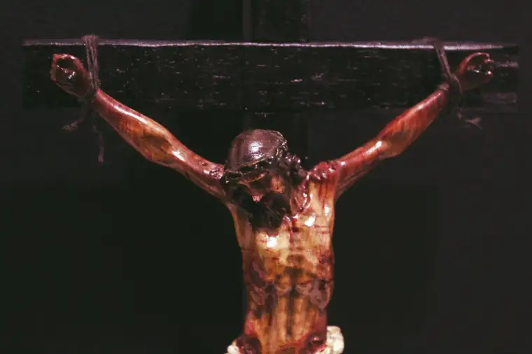

“Unless I see in his hands the print of the nails, and place my finger in the mark of the nails, and place my hand in his side, I will not believe (John 20:25).”
These words are repeated on Day 28 of the book, “Jesus I Trust in You: A 30 Day Personal Retreat with the Litany of Trust,” by Sr. Faustina Maria Pia, S.V. Here, she reminds us how, after Jesus’ Resurrection, he appeared to the disciples—to all but Thomas, who was absent. Learning of this visit, Thomas yearns to catch up to the hearts of his friends.
A week later, Thomas and the apostles receive another visit from Jesus, and in that encounter, Jesus turns to Thomas, inviting him to place his hands in His wounds in order to believe he is truly God. “My Lord and my God!” are words that follow from Thomas’ lips; words that have echoed through the centuries since, for who can’t relate to wanting to see something for ourselves before we will believe?
Recently, the five wounds of Jesus took on new meaning for me while attending a women’s retreat led by Liz Kelly at a Franciscan monastery in North Dakota. There, we were introduced to the Rosary to the Holy Wounds, also known as the Holy Wounds Chaplet, a devotion revealed by Our Lord to St. Mary Martha Chambon (1841-1907) of the Monastery of the Visitation of Chambery, France.
While not a new devotion, it is new to me. Just as Jesus’ up-close wounds were new to Thomas, and thus, drew him in, I have been drawn in further to Jesus’ life, death and resurrection, and his desire to heal us, through this recitation.
Let’s return briefly to Sr. Faustina’s writings, specifically from her reflection on p. 180: “Full of humility, (Jesus) meets Thomas where he is at. This is what Jesus did in becoming man and continually does for each one of us, knowing that this very type of love will bring us to where He is.”
While it might have pained Jesus that Thomas put conditions on his belief in the Lord’s power, Sr. Faustina continues, Jesus was not upset with him. “The pain Jesus felt was a pain of knowing that someone He loves does not know Him.”
But then, the revelation happens. And in seeing Jesus’ wounds up close, “Thomas realizes he is actually encountering his own wounds, taken up by Jesus and now glorified. My Lord and my God.”
The wounds of Jesus have become very personal to Thomas, bringing him into a deeper relationship with the Lord; one that would ultimately help shape human civilization.
I, too, keep confronting the wounds of Jesus, and in this beautiful Rosary to the Holy Wounds, I now have a way to speak into those wounds, and pray through them, not only for my own wounds but for the wounds of my whole family.
The main part of the Rosary, after introductory prayers, includes this recitation on the large beads: “Eternal Father, I offer You the Wounds of our Lord Jesus Christ…To heal the wounds of our souls.
And then, on the small, decade beads: “My Jesus, pardon and mercy…Through the merits of Your Holy Wounds.”
I have found I enter into the mysteries more fully by personalizing the decades. I do this by beginning each decade with naming a family member whose own wounds need Jesus’ healing; a healing that can be manifest through meditating on our Lord’s five wounds.
The final prayer of this devotion sums it up: “Lord Jesus, Man of Sorrows, we have meditated upon your suffering. We have considered those wounds we know and those unknown to us, and with confidence in your mercy, we ask you to grant us a greater purity of heart, true humility, and courage in our own suffering. We place ourselves and our loved ones into your holy wounds, trusting in your compassion and healing grace. Make us holy and worthy to call you Lord. Amen.”
Pointedly, Sr. Mary Martha also received these simple words from Our Lord, “My wounds will repair yours.” It’s beautiful to think that we can join our wounds to Jesus’ as a way to seek healing and greater intimacy with him, and for the needs of our loved ones.
The cause for the beatification of Sr. Mary Martha Chambon was introduced in 1937. To learn more about this devotion, and the promises given to her for those who pray it, search online or check out the book, “My Treasury of Chaplets.”
“Sr. Mary Martha Chambon, pray for us.”
Q: What wounds does Jesus need to heal in you?